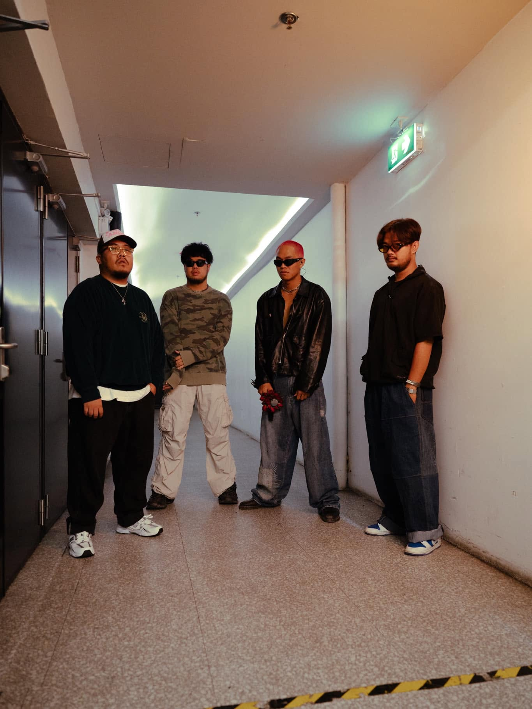
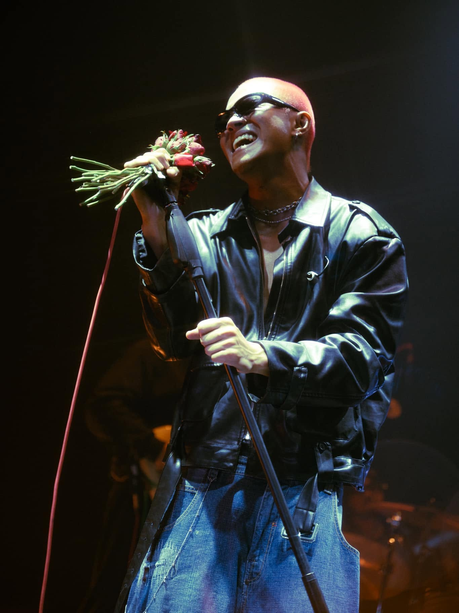
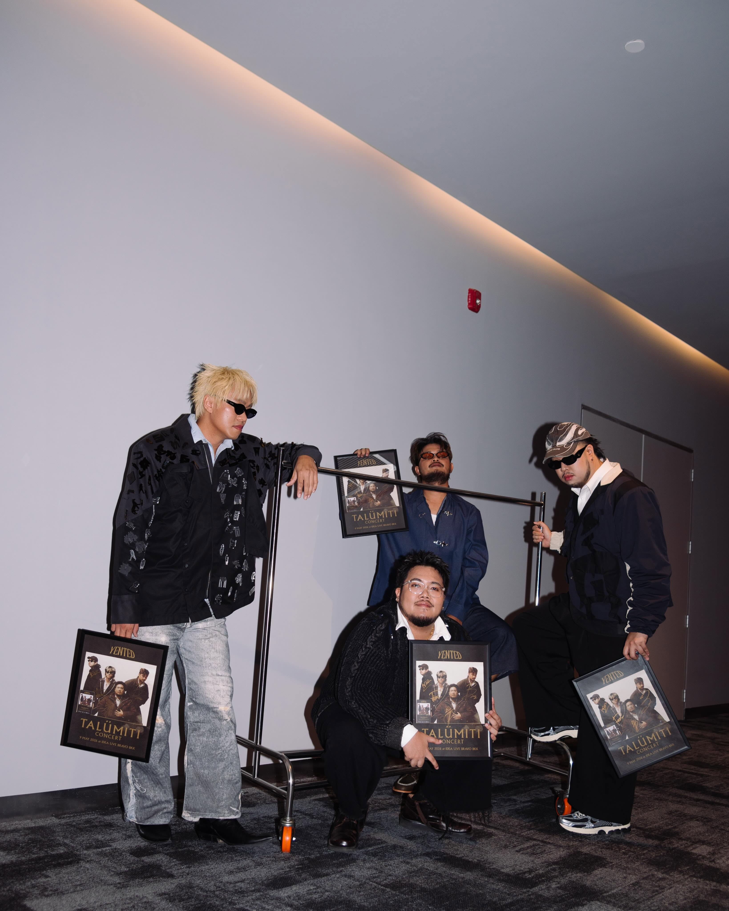
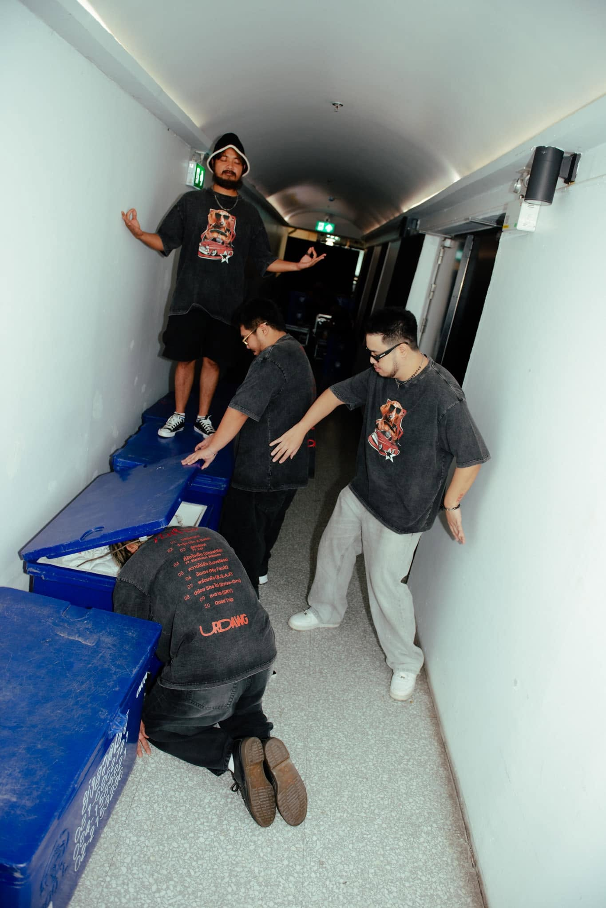
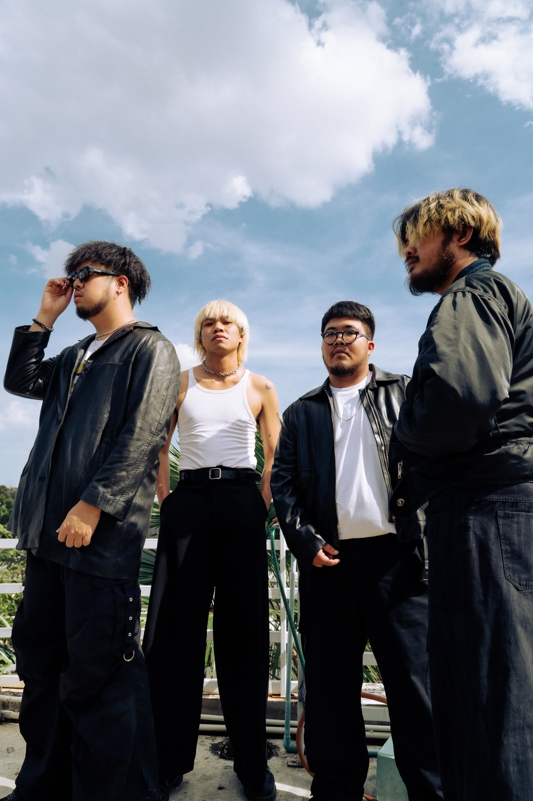
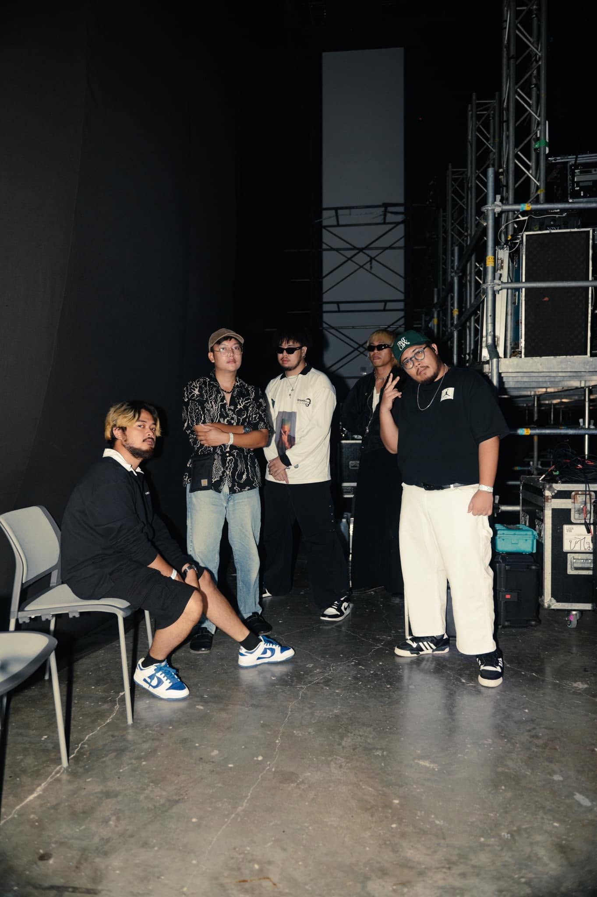

The Beginning of
YENTED.
YENTED หรือ เย็นเต็ด เป็นวงดนตรีไทยที่มีจุดเริ่มต้นจากการทำเพลงร่วมกันของกลุ่มเพื่อนในมหาวิทยาลัยพะเยา วงเริ่มต้นจากการทำเพลงอะคูสติกป๊อป ก่อนจะค่อย ๆ พัฒนาซาวด์และทดลองผสมผสานแนวดนตรีที่หลากหลาย จนเกิดเป็นเอกลักษณ์ของตัวเอง



Let it
play.
สิ่งที่น่าสนใจคือ ชื่อวงไม่ได้มีความหมายลึกซึ้งตั้งแต่แรก แต่เกิดขึ้นจากสถานการณ์เร่งด่วนในวันที่พวกเขาต้องส่งเพลงให้รายการ Bedroom Studio ของ Cat Radio ไม่ต้องรีบกดข้ามไปเพลงที่คุ้นหู
โดยเจา นักร้องนำ เล่าว่าได้แรงบันดาลใจจากชื่อเครื่องดื่ม “เย็นเย็น” ที่มอสชอบดื่ม แล้วนำมาผสมกับไอเดียจากชื่อทีมฟุตบอล Manchester United จนกลายเป็น YENTED

Through
the Music.
บทเพลงของ YENTED จึงเป็นอีกหนึ่งพื้นที่ที่เปิดโอกาสให้เราได้ตีความเรื่องราวผ่านมุมมองของตัวเอง แต่ละคนอาจได้ยินเพลงเดียวกันและรู้สึกแตกต่างกันออกไป และนั่นคือเสน่ห์อย่างหนึ่งของดนตรี เพราะความหมายของเพลงไม่ได้หยุดอยู่แค่ตอนที่ผู้สร้างถ่ายทอดมันออกมา
แต่ยังเดินทางต่อไปพร้อมกับผู้ฟังทุกคน
A Story
Worth
Keeping.
เมื่อเวลาผ่านไป เพลงบางเพลงอาจไม่ได้ถูกเปิดฟังบ่อยเหมือนเดิม แต่ความรู้สึกที่เคยเกิดขึ้นในวันที่ได้ฟังเพลงเหล่านั้นยังคงมีความหมาย ความทรงจำบางอย่างอาจเลือนหายไปตามกาลเวลา แต่เสียงเพลงก็สามารถทำให้เราหวนกลับไปสัมผัสช่วงเวลาเหล่านั้นได้อีกครั้ง
เว็บไซต์แห่งนี้จึงเกิดขึ้นจากความตั้งใจที่จะรวบรวมสิ่งต่าง ๆ ที่เกี่ยวข้องกับ YENTED ไม่ว่าจะเป็นบทเพลง ผลงาน ภาพถ่าย หรือเรื่องราวเล็ก ๆ ที่มีคุณค่าต่อความรู้สึก เพื่อให้ทุกสิ่งที่ชื่นชอบมีพื้นที่ให้กลับมาค้นพบได้เสมอ
The collection
